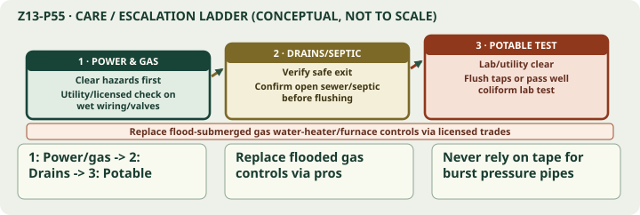

Z13-P55 · Home survival and utilities · New manuscript
Follow utility clearance and licensed-plumbing gates after sewer or water failures
Ensure contaminated home supply and waste lines are professionally verified before returning families to normal household plumbing.
When it applies · Post-flood, post-freeze-burst, or post-sewer-backup recovery across municipal and rural residences.
Equipment · Utility clearance notices, licensed plumber/septic/well contacts, and written restoration checklist.

Actions
- Keep municipal/septic/well restoration sequenced logically: confirm structural/electrical/gas clearance FIRST, verify wastewater/septic drain clearance SECOND (so flushed water has a safe exit), and verify potable supply testing/flushing THIRD.[D05, U07, D12]
- Escalate cracked supply risers, compromised backflow valves, submerged water heaters/furnaces (flooded gas valves corrode silently), and broken sewer lines to licensed plumbers and HVAC technicians rather than temporary tape patches.[U08, U11, U07]
- Sanitize hard non-porous surfaces that contacted flood/sewage water strictly with labeled dilute bleach-and-water solutions (never mixed with ammonia/acids) after removing mud and debris.[U13, M15]
Failure recognition · Turning main water back on to test a thawed basement before discovering a split upstairs pipe and a flooded sewer trap.[U08, U07]
Verify · Confirm electrical/gas safe, drains clear, licensed repairs inspected, and potable lab/utility clearance received.[D12, U07, U11]
Stop or change course · Unresolved leaks, corroded submerged gas controls, or failed water quality tests keep normal plumbing out of service until licensed trades sign off.[U11, W18]
Evidence and editorial notes
- D05 · FEMA / Ready.gov · Floods (current web edition)
- Section: Floods > Flash Flood Evacuation, Turn Around Don't Drown, and Re-Entry · Conditions: River flooding, urban flash flooding, dam/levee risk, and post-flood return
Support: Evacuate early when ordered, move to higher ground immediately on Flash Flood Warnings, never walk or drive through floodwater (6 inches knocks down adults; 12 inches carries most cars), and never enter flood-damaged homes until electrical, gas, and structural hazards are cleared.
Limitations: Floodwaters commonly contain raw sewage, fuel, submerged debris, and energized downed wiring. · Conflicting evidence: None; aligns with T07, T16, and N10.
Editorial note: Core flood evacuation, water-avoidance, and safe re-entry evidence. · Specialist reviewer: Emergency management and flood hydrology
Primary source · checked 2026-11-24 - D12 · CDC · Drinking Water Advisories: An Overview (current web edition)
- Section: Water-System Interruptions and Advisory Compliance · Conditions: Municipal main breaks, depressurization, chemical spills, or treatment-plant outages
Support: Follow the exact active utility advisory tier (Boil Water, Do Not Drink, or Do Not Use), shut off automatic icemakers/appliances during advisories, flush household pipes strictly per utility clearance instructions after restoration, and rely on stored or agency-distributed potable water during outages.
Limitations: Boiling water during a chemical-spill Do Not Drink/Do Not Use notice can volatilize or concentrate contaminants. · Conflicting evidence: None; integrates W07 into Z15 infrastructure-disruption scenarios.
Editorial note: Anchors municipal water-outage compliance and safe flushing. · Specialist reviewer: Drinking-water utility and public health
Primary source · checked 2026-11-24 - M15 · NIH / MedlinePlus · Poisoning (current web edition)
- Section: Suspected Poisoning, Ingestion, and Toxic Exposure · Conditions: Accidental ingestion, inhalation, or skin/eye contact with toxic plants, chemicals, or medications
Support: Call 911 immediately if the person is unresponsive, seizing, or struggling to breathe; otherwise contact Poison Control (1-800-222-1222 in the U.S.) with exact substance details and do not induce vomiting unless directed.
Limitations: Improvised emetics or charcoal can worsen caustic or hydrocarbon injury. · Conflicting evidence: None; aligns with Poison Control guidance.
Editorial note: Separates 911 life-threat activation from Poison Control guidance. · Specialist reviewer: Medical toxicology and poison control
Primary source · checked 2026-11-24 - U07 · US EPA · Septic Systems (Onsite/Decentralized Systems) (current web edition)
- Section: Septic Systems > Power Outages, Floods, and Water Conservation · Conditions: Households with onsite septic systems during electrical outages or flooding
Support: Conserve household water sharply during outages (especially with pump-assisted septic tanks), avoid driving over drainfields, never pump out a flooded tank prematurely (buoyant tanks can float), and have licensed professionals inspect flooded systems.
Limitations: Using high-volume household plumbing when lift pumps are dead backs sewage directly into basements. · Conflicting evidence: None; critical outage wastewater boundary.
Editorial note: Grounds septic-system limits and outage water conservation in Z13. · Specialist reviewer: Onsite wastewater engineering and public health
Primary source · checked 2026-11-24 - U08 · FEMA / Ready.gov · Water Storage and Emergency Supply (current web edition)
- Section: Water > Emergency Household Supply, Shutoff, and Alternate Indoor Sources · Conditions: Household plumbing disruptions, water-main breaks, or winter freeze outages
Support: Store at least 1 gallon per person per day for several days (two weeks where feasible for extended outages), know the main water shutoff valve location, and recognize clean indoor water-heater reserve boundaries only after shutting off power/gas and confirming supply safety.
Limitations: Never use water from radiators, hot-water boilers, or chemically treated toilet tanks for drinking. · Conflicting evidence: None; complements CDC-S (W06, W14).
Editorial note: Covers household water shutoffs, pipe-freeze prevention, and safe indoor reserves. · Specialist reviewer: Plumbing safety and drinking-water public health
Primary source · checked 2026-11-24 - U11 · FEMA / Ready.gov · Hazardous Materials Incidents (current web edition)
- Section: Natural Gas Leaks, Fuel Odors, and Utility Shutoff Boundaries · Conditions: Suspected household natural gas, propane, or fuel-oil leak
Support: If you smell rotten eggs/mercaptan or hear hissing near gas lines, leave the building immediately without toggling light switches or using phones inside, and call 911 and the gas utility from outside; never turn gas back on yourself.
Limitations: Only the gas utility or licensed technician may restore shut-off gas service and relight pilot systems safely. · Conflicting evidence: None; critical residential utility stop condition.
Editorial note: Establishes strict utility-leak evacuation and licensed restoration gates. · Specialist reviewer: Gas utility safety and fire service
Primary source · checked 2026-11-24 - U13 · CDC · How to Make Water Safe in an Emergency (2024-09-19)
- Section: Sanitation, Hand Hygiene, and Emergency Waste Containment · Conditions: Household water-service or sewer interruption
Support: Maintain separate handwashing stations using safe water and soap (or alcohol hand rub when hands are not visibly soiled), line emergency bucket toilets with heavy bags and tight lids when sewer service is unusable, and never mix bleach with ammonia or acids.
Limitations: Improvised sanitation is a temporary containment bridge until municipal sewer or licensed sanitation resumes; follow local health department disposal orders. · Conflicting evidence: None; prevents fecal-oral outbreaks and toxic chloramine gas mixing.
Editorial note: Core household sanitation and chemical-mixing boundary in Z13. · Specialist reviewer: Environmental health and sanitation specialist
Primary source · checked 2026-11-24 - W18 · CDC · What to Do With Your Private Well After a Flood (current web edition)
- Section: How to Disinfect Wells After an Emergency > Safety precautions and before returning to use · Conditions: Private drinking water wells submerged or impacted by floodwater
Support: Do not drink flood-impacted well water; rely on bottled or verified safe water, watch for fuel/chemical spills, and use qualified well contractors for inspection, electrical safety, and disinfection.
Limitations: Well shock-chlorination is unsafe to improvise around damaged electrical equipment or chemical releases. · Conflicting evidence: None; aligns with EPA private-well guidance.
Editorial note: Prevents DIY well repair or consumption before testing confirms safety. · Specialist reviewer: Drinking-water utility and environmental health
Primary source · checked 2026-11-24
Source lineage · US EPA Septic and CDC Water Advisories; new manuscript · Classification · New manuscript.